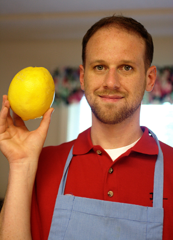

Assignment 0
Visit my blog!

- Name: Albert Morgan
- Major and year: Computer Science, Senior
- Confidence: On a scale from one to ten, I would consider myself a five. I feel very confident with my basic skills, such as HTML,
CSS, and JavaScript, and have delved into some subjects such as AJAX and jQuery, but there is still much for me to learn.
- Learning goal: I hope to learn about some more advanced topics. I am particularly exicted about learning Node.js, which I have no experience with.
- Piazza: I have signed up for Piazza, and joined the class.
- Interesting experience: I was in the U.S. Army, and did a tour of duty in Iraq during Operation Iraqi Freedom II.
Nowadays, I am out of the military and spend most of my time posing with lemons and other citrus fruit.